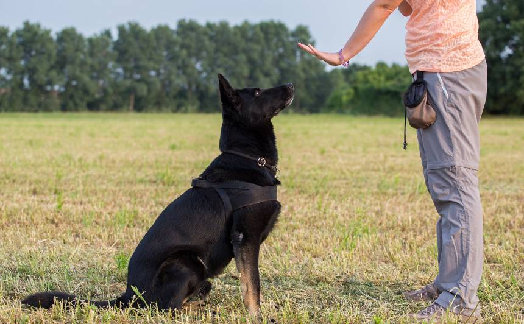
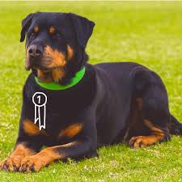

Vēsturiski suņi tika radināti veikt dažādus uzdevumus, piemēram, apsargāt teritorijas, ganīt aitas, medīt putnus un meža zvērus. Taču šodien itin bieži suņi tiek atstāti mājās skumt un garlaikoties. Tad sākas problēmas – suns grauž lietas, rok piemājas dārzu vai, reaģējot uz jebkuru apkārtējo kairinājumu – nogurdinoši rej. Lai to mainītu, suni nepieciešams nodarbināt un pievērst viņam uzmanību. Apmācot un trenējot suni, Jūs veidojat ciešāku saikni ar viņu. Jo uzcītīgāk Jūs viņu trenēsiet, jo labāka saikne jums radīsies, un labāk viņš Jūs sapratīs.

Jo agrāk Jūs uzsāksiet metodiski un mērķtiecīgi darboties ar savu kucēnu, jo vieglāk un raitāk virzīsies apmācības process. Ja Jums trūkst pieredzes suņa apmācībā, vēlams pirmo konsultāciju pie kinologa-apmācību trenera saņemt jau pirmajā kopdzīves nedēļā. Tas ļaus jau no pašām pirmajām dienām Jūsmajās kucēnam iepazīt mājas kārtību, pamatpaklausības komandas un palīdzēs ievirzīt savu suni harmoniskai un laimīgai kopdzīvei. Kad esat apguvuši pamatpaklausības komandas un suns ar prieku izpilda Jūsu uzdevumus, pakāpeniski varat pievienoties apmācību grupai, lai suns iegūtu nepieciešamās socializācijas iemaņas un nostiprinātu apgūtās zināšanas jaunā un iespaidiem bagātā vidē.

Pamata apmācība norisinās sunim ierastākā vidē. Sākumā vēlams būtu atrast nomaļāku vietu, lai apkārtējā kņada netraucē. Tad kad suns ir apguvis pamata komandas, to var un vajag sākt socializēt un apmācīt kopā ar citiem suņiem. Tam ļoti piemērotas būtu suņu apmācību grupu nodarbības. Arī Jūsu ģimenes locekļi var apmācīt suni, darbojoties pēc tiem pašiem apmācības principiem, pēc kuriem saimnieks darbojas suņu skolā. Pamatpakausības iemaņas nostipriniet, izvedot suni pastaigā, dodoties uz suņu veikalu, kā arī satiekoties ar citiem.
Suns vienmēr ir bijis labs sabiedrotais cilvēkam. Taču, lai tas spētu iekļauties sabiedrībā, tam ir jāpalīdz apgūt dažādas iemaņas. Tad apkārtējiem Jūsu suns būs patīkams kompanjons, mācēs uzvesties un priecēs ar savu klātbūtni. Jūs varēsiet apmeklēt dažādus pasākumus un vietas, kur suņa kompānija būs patīkams notikums.